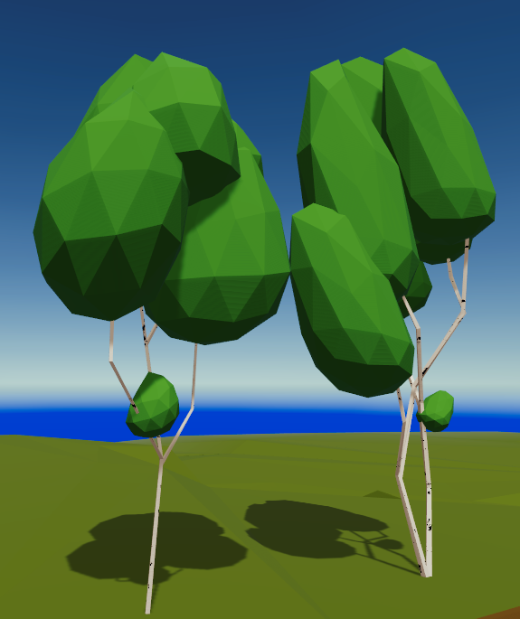

<article>
  <div class="container">
    <div class="row">
      <div class="col-lg-8 col-md-10 mx-auto">
        <p>
          So I have started to create a variety of trees, these attempts have been better than the earlier ones. 
          Birch is looking good, came up with a nice shader for the bark.  will want to try that for other species as well.
          The list below is lofty, will make a few more trees of varing types and call it good for now.
        </p>
        <p>
          <span>Birch</span>
          
        <p>
        <p>
          <div id="checkboxes">
            <label>Meshes Required</label>
            <ul style="list-style: none;">
              <!-- <li><input type="checkbox" checked onclick="return false;"> Island and rocks</li> -->
              <li><input type="checkbox" checked onclick="return false;"> Paper Birch - small, medium, large, ancient</li>
              <!-- <li><input type="checkbox"> Silver Birch - small, medium, large, ancient</li> -->
              <li><input type="checkbox"> Black Ash - small, medium, large, ancient</li>
              <li><input type="checkbox"> White Ash - small, medium, large, ancient</li>
              <li><input type="checkbox"> Blue Ash - small, medium, large, ancient</li>
              <li><input type="checkbox"> White pine - small, medium, large, ancient</li>
              <li><input type="checkbox"> Blue Spruce - small, medium, large, ancient</li>
              <li><input type="checkbox"> Jack Pine - small, medium, large, ancient</li>
              <li><input type="checkbox"> Fir - small, medium, large, ancient</li>
              <li><input type="checkbox"> Red Oak - small, medium, large, ancient</li>
              <li><input type="checkbox"> White Oak - small, medium, large, ancient</li>
              <li><input type="checkbox"> Swamp Oak - small, medium, large, ancient</li>
              <li><input type="checkbox"> Norway Maple - small, medium, large, ancient</li>
              <li><input type="checkbox"> Sugar Maple - small, medium, large, ancient</li>
              <li><input type="checkbox"> Japanese Maple - small, medium, large, ancient</li>
              <li><input type="checkbox"> Silver Maple - small, medium, large, ancient</li>
              <li><input type="checkbox"> Staghorn Sumac - small, medium, large</li>
              <li><input type="checkbox"> Corkscrew Willow - small, medium, large</li>
              <li><input type="checkbox"> Peach-Leaf Willow - small, medium, large</li>
              <li><input type="checkbox"> Peacan Hickory - small, medium, large</li>
              <li><input type="checkbox"> Black Walnut - small, medium, large</li>
            </ul>
          </div>
        </p>
        <p>Links:
          <ul style="list-style: none;">
            <li><a href="https://www.blendernation.com/2017/03/20/tutorial-low-poly-trees/">blender - good low poly tree tutorial</a></li>
          </ul>
        </p>
      </div>
    </div>
  </div>
</article>